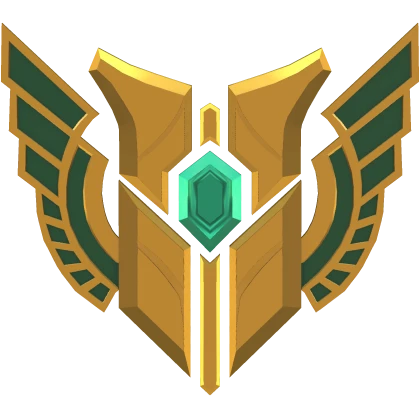
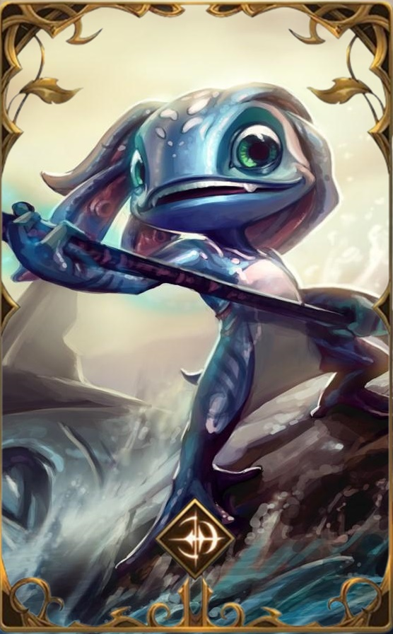
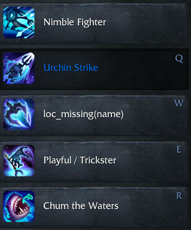

NIVEL
MAESTRIA 7

'Vocês não podem nem respirar na água. Que chatos.'
Fizz
Fizz é um yordle anfíbio que vive entre os recifes que rodeiam as Águas de Sentina. É comum que ele busque e devolva os dízimos jogados no mar por capitães supersticiosos, mas mesmo o mais velho dos marinheiros sabe que não é uma boa ideia irritá-lo. São muitas as histórias daqueles que subestimaram seu caráter escorregadio. Frequentemente confundido com algum tipo de espírito marinho imprevisível, ele parece capaz de comandar enormes bestas das profundezas e se diverte confundindo tanto seus inimigos quanto seus aliados.
FUNÇÃO
ASSASSINO
